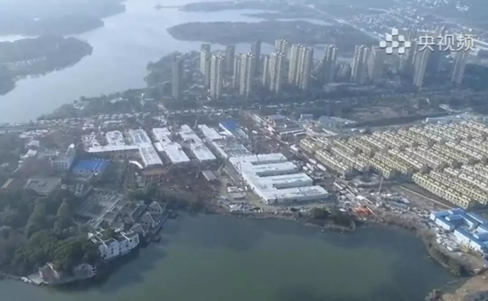
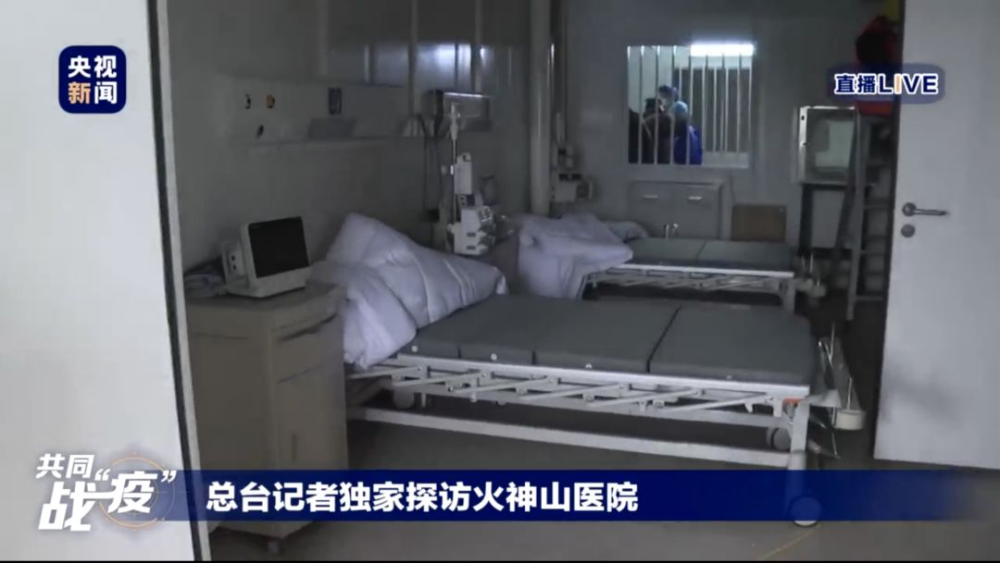
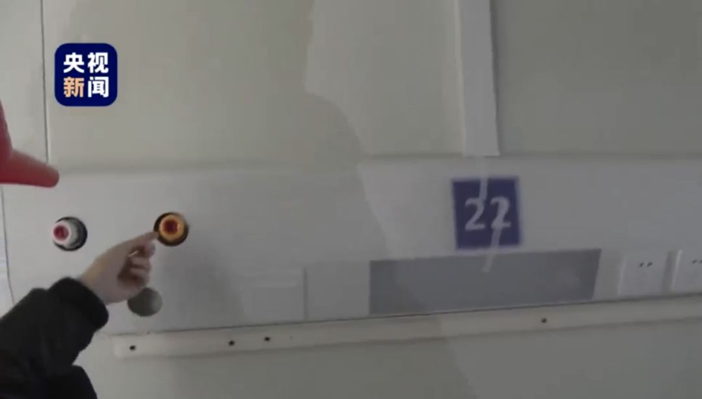
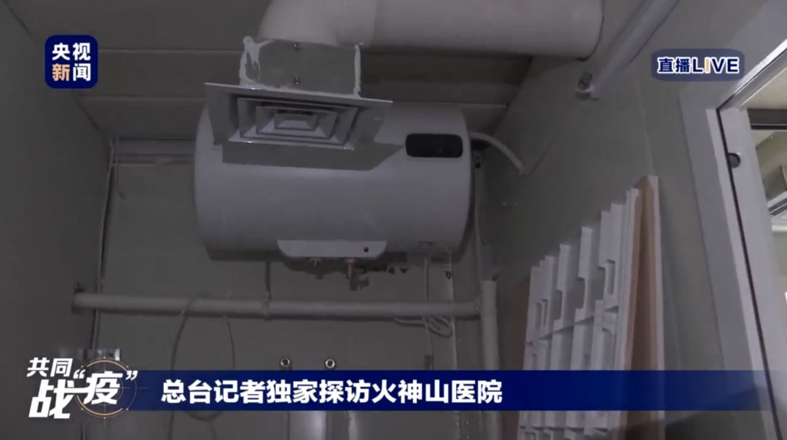
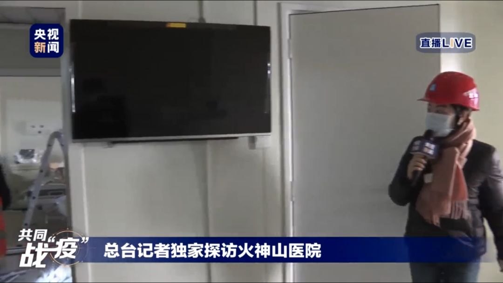
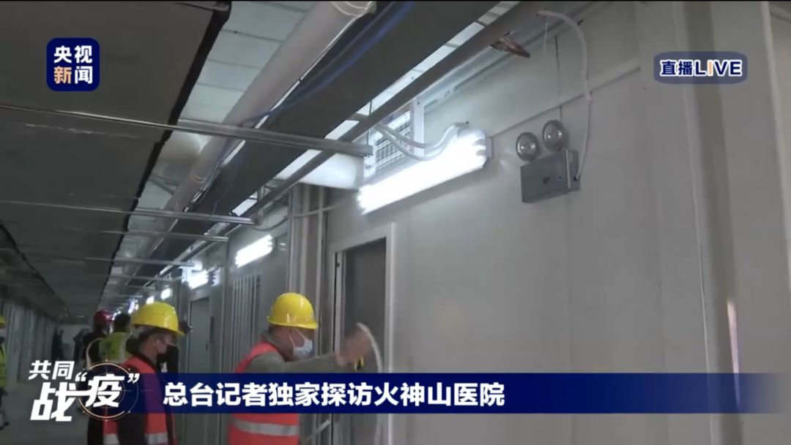
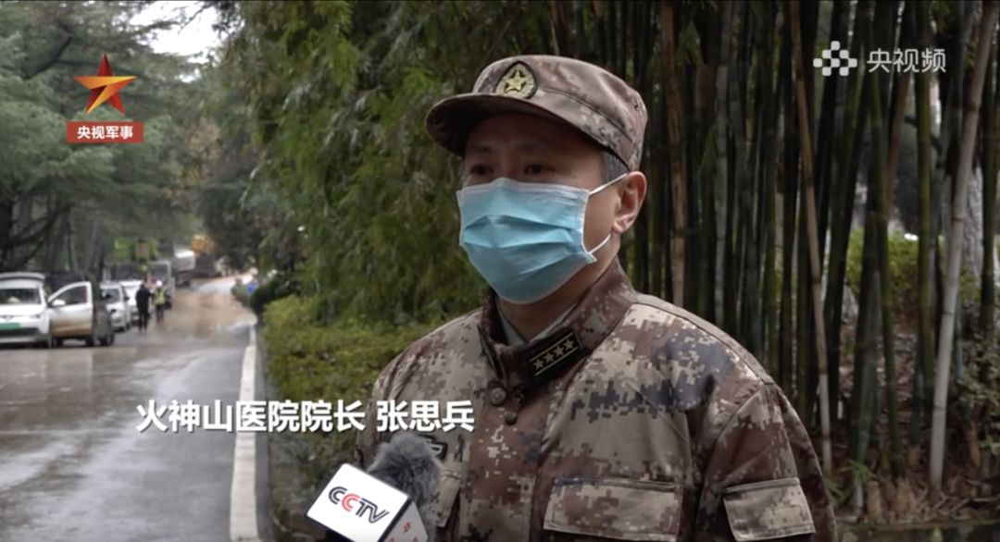
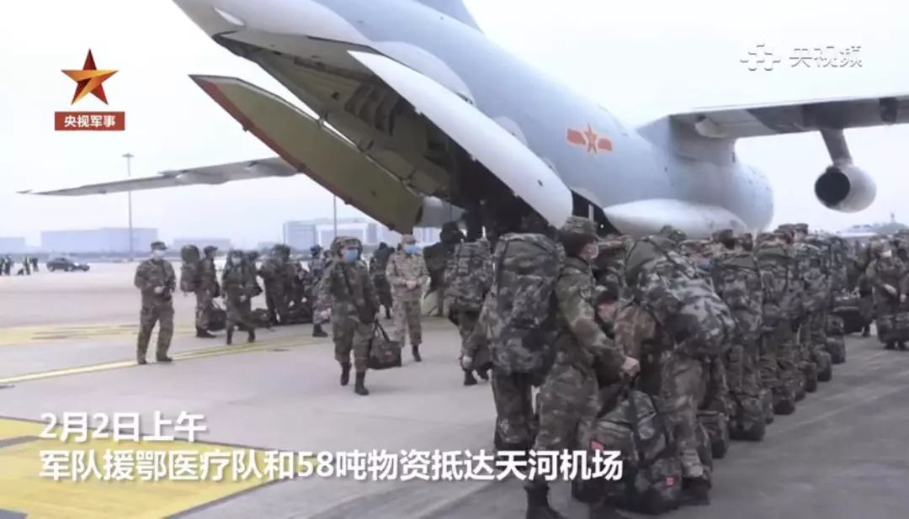
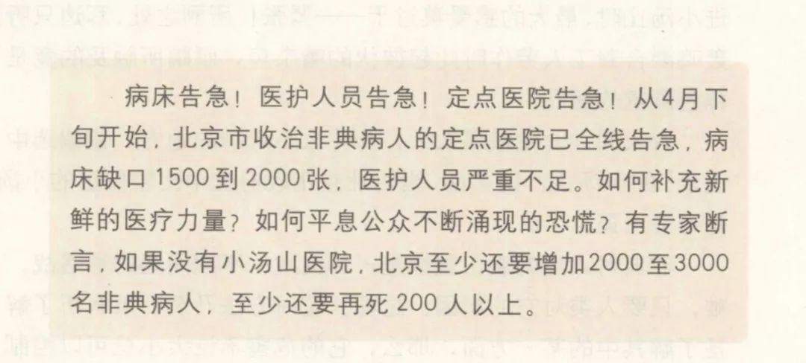

小汤山医院设计师：没想到图纸再用，希望武汉新医院效果更好
原文链接 备份链接 ********** *****黄锡璆表示，现在的技术条件比建设小汤山医院时好多了，他希望火神山医院的建设能够实现更好的使用效果。***** 火神山医院施工现场。受访者供图 文 | 新京报记者 韩沁珂 编辑｜王婧祎 校 …


拥有1000张床位的火神山医院今天开始接收病人，主要救治确诊患者。
1400位来自军队的医护人员已经抵达，院长张思兵大校是SARS防治专家。
拥有1600张床位的雷神山医院预计2月5日完工。
两家医院投入使用一定程度上能缓解武汉当前新冠肺炎患者就医难的困境，也有助于减少恐慌情绪。

临危受命的武汉火神山新冠肺炎专科医院，今天就要开始接收病人了，主要救治确诊患者。
火神山医院共1000张床位，1月24日动工，到昨天（2月2日）正式交付，历时10天，前后7500名左右建设者参与，工地的24小时直播页面超过8000万人次观看。
昨天上午，950位从联勤保障部队所属医院抽调的医护人员，从沈阳、兰州、南京、广州四地分别出发抵达武汉，和已支援武汉近10天、第一批抵达的来自陆军军医大学、海军军医大学、空军军医大学的450位医护人员一起，组成一个包含1400人的医疗团队，承担火神山医院的医疗救治任务。
院长张思兵大校昨天也已亮相，此前是解放军总医院（301医院）卫勤部部长，公开资料显示，他出生于1969年，曾参加过2003年抗击SARS、援建小汤山医院等重大任务。
△资料图
张思兵发表过多篇关于SARS防治的论文，例如《SARS诊断、出院标准和医院收治策略研究》、《严重急性呼吸综合征的医学防护》等等，其中第二篇他是第三作者，而第四作者正是北京小汤山医院院长张雁灵。
火神山以及预计2月5日完工的雷神山医院，被称为武汉的“小汤山”。小汤山医院接收了680名非典病人，其中672人康复出院，参与治疗和护理的1383名医护人员没有一人被感染，被认为是北京SARS防治的转折点。
小汤山医院建立之时，正是北京SARS疫情最紧张的时候，医院全线告急，病床缺口1500到2000张。张雁灵后来说，“当时给我的感觉是很可怕，病人已经多到了没有地方容纳的地步，甚至治疗病人的医生也在不断倒下。”
此时的武汉，同样告急，八点健闻两天前的文章《未确诊新冠病例：隐藏在统计数字背后的生命故事》中，介绍了患者面临着确诊难、入院难的困境。截至昨天下午，当时采访的几位患者，只有一位已经入院，其他人都还在等待中。
目前武汉开放的三批定点医院床位数一共6754张，2月2日提出将改造开放的两批定点医院能够新增2183张床位，加上火神山的1000张，雷神山1600张床位，困境能够在一定程度上得到缓解。
而曾任小汤山医院重症监护室主任、现任上海市第四人民医院院长熊利泽接受《新民周刊》采访时认为，临时医院启用后更重要的作用是提高治愈率、降低死亡率，减少社会恐慌情绪。

△来源：央视频截图
十天时间，如何建成一座医院
和小汤山不一样，“火神山”“雷神山”两所应急医院的命名并非直接来源于地名，而是被赋予了特殊意义。
湖北乃古楚之地，在楚文化传说中，楚国人被认为是火神祝融的后代。人的肺部五行属金，火克金，而荼毒人类肺部的新型冠状病毒惧怕高温，火神正好能驱瘟神，于是“火神山”之名应运而生。
过去的10个昼夜里，建设者们分两班轮换，在相当于7个足球场大小的工地上不断赶工。与抗疫的紧张情绪并存的，是观看视频直播的网友们给建筑工地上叉车（叉酱）、挖掘机（小小黄）、水泥泵机（呕泥酱）等起的萌系名字和加油助威。
△来源：央视频截图
火神山建设时间轴：
1月23日下午，武汉市城建局紧急开会，要求参照2003年抗击“非典”期间北京小汤山医院模式建设一座专门医院；
1月24日，除夕，第1天，完成相关设计方案，上百台挖机抵达现场，开始土地平整；
1月25日，大年初一，第2天，正式开工；
1月26日，大年初二，第3天，第一间样板房建成；
1月27日，大年初三，第4天，场地整平、碎石黄沙回填全部完成；首批箱式集装箱板房吊装搭建；
1月28日，大年初四，第5天，双层病房区钢结构初具规模；
1月29日，大年初五，第6天，300多个箱式板房骨架安装完成；机电管线作业同步展开；
1月30日，大年初六，第7天，防渗膜铺设全面完成；污水处理间设备吊装同步展开；
1月31日，大年初七，第8天，9成集装箱的拼装均已完成；活动板房骨架安装3000平方米；
2月1日，大年初八，第9天，全面展开医疗配套设备安装；
2月2日，大年初九，第10天，交付。
医院内部设施
十天抢建出来的医院，内部环境究竟如何？跟着昨天下午央视直播的镜头可以去看看。

每间病房内有两张病床，病床旁有柜子和医疗设备。

氧气管道是重要的基础设施。

空调及通风管道，保障输送到房间的空气已经过净化；且每个房间配有一台空气净化机。

传染病房特有的隔离传递舱，用于医疗物资、药品和食品的传递，传递舱内有紫外线系统消毒，避免感染。

每个病房配有独立卫生间，卫生间内配备有热水器、马桶、洗手池等基本用品。


病房也安装了电视机。

病区走廊安装有消毒灯。

医疗废水排向哪里是个重要的问题，对于传染病医院而言，这更是防疫的关键。此前，中信建筑设计研究总院有限公司副总建筑师、火神山设计总负责人汤群接受八点健闻专访时表示，火神山医院采取了雨水全收集消毒处理和全基地铺设防渗膜的技术措施。5万平方米的建设用地采用防渗膜全覆盖，污水接触消毒4小时后排入城市管网，场地雨水则通过专门系统全面收集，消毒半小时后排入城市管网，医疗垃圾按照环保部门的相关规定进行专门处置。

△ 中信建筑设计研究总院 供图
作为传染病隔离治疗医院，火神山医院对于防护隔离的要求极高。汤群介绍称，通过设置清洁区、半污染区、污染区及医护人员专用通道和病人通道的布置方式，以及相对应的零压清洁空间到负压病房的通风系统，避免交叉感染。医护人员进出病区设置包括风淋在内的专用卫生通过设施，最大限度地保护医护人员的健康安全。
院长是SARS防治专家
据中华口腔医学会官网消息，火神山医院院长张思兵是口腔医学出身的医疗保健管理专家，毕业于原第四军医大学88级口腔系，历任原309医院口腔科医师、解放军总医院医疗处处长、解放军总医院海南分院医务部主任、解放军总医院卫勤部部长等职等职。
张思兵曾参与抗击SARS，发表了多篇关于SARS的论文，主要探讨SARS定点医院提高治愈率、降低死亡率、争取“ 零” 感染的综合策略。
除了小汤山医院的成绩，他和张雁灵等作者合作的《严重急性呼吸综合征的医学防护》中，还提到：（2003年）解放军309 医院 3 个月收治 202 例SARS 患者, 发热门诊收治 2500 余例发热病人,有 248 名医务人员轮流工作在防“非典”一线,均未感染SARS 。

△来源：央视频截图
1400名医护人员已就位
据空军新闻，2月2日凌晨，空军出动8架大型运输机，先后从某军用机场起飞，凌晨4时陆续抵达沈阳、兰州、广州、南京等地，开始装载795名军队医疗队队员和58吨物资，之后再次升空飞赴武汉。上午8时55分开始，8架大型运输机每间隔5分钟依次降落在武汉天河机场。中午，军队筹组医疗力量全部到位。

△来源：央视频截图
火神山医院开设重症监护病区、重症病区、普通病区，设置感染控制、检验、特诊、放射诊断等辅助科室。
无锡联勤保障中心卫勤处处长沈烈在接受央视采访时表示，和以往不同的是，这次除了医疗、护理人员，还抽组了管理、信息和勤务保障人员，以满足新医院的运行要求。
出发之前，医疗队已经进行了三天的全封闭式管理培训，建立了行政管理、医疗救护、个人防护、后勤保障四个方面28个方案，并邀请了呼吸、传染、重症医学的专家进行授课。
除了来自军区不同医疗机构的1400名医护人员，解放军疾病预防控制中心、军事科学院军事医学研究院还抽出15名专家组成联合专家组，现地指导医院疫情防控工作。医护人员中，有不少人曾参加小汤山医院抗击非典任务以及援助塞拉利昂、利比里亚抗击埃博拉疫情任务，具有丰富的传染病救治经验。
小汤山的奇迹能否再现
小汤山建设于北京SARS最紧张之时，后来也成为了SARS防治的转折点。
张雁灵在《回望小汤山》中说：“有专家断言，如果没有小汤山医院，北京至少还要增加2000至3000名非典病人，至少还要再死200人以上”。

△图片来源：《回望小汤山》截图
17年后，火神山向小汤山学习了不少经验。张雁灵受邀担任专科医院专家顾问，在他看来，火神山医院、雷神山医院建设的规模质量、设计的科学合理性以及设备的配备都优于、高于小汤山。
中信建筑设计研究总院建筑师田怡告诉八点健闻，小汤山医院的大病区是分开独立的，要从一个区到另一个区只能从户外穿行，且病人通道都直接对外，没有封闭。火神山医院则根据小汤山医院和武汉医疗专家组的意见，将医护流线和病人流线都在室内，同时又分别隔离。医护人员通过建筑中的医护清洁走道可以到达每一个病区，不需要达到室外，更有效地保护了医护人员的安全。而且火神山的病房使用了17年前还没有的集装箱房。
如今，新冠肺炎的确诊病例数已经超过当年的SARS，火神山医院被予以厚望。
为什么在核心疫区武汉必须建火神山、雷神山医院？据《长江日报》报道，张雁灵谈到了四点：
第一，当务之急是缓解当前病人多，现有医院过载，收不进院的问题。
第二，是使这些患者能够得到正规、规范化的治疗。
第三，集中收治，减少了传染病、传播地的扩散。
第四，给老百姓树立信心。
吴晔婷|撰稿
王吉陆|责编


我们尊重原创版权，未经允许请勿转载。
授权转载
郑琪 微信号: 1281949389
商务合作
上海：leslee 13916263824
北京：Jessie 13911125922
线索爆料、意见反馈，加入核心读者社群
请扫码联系健闻君

让朋友们看到你也在看
↓↓↓
原文链接 备份链接 ********** *****黄锡璆表示，现在的技术条件比建设小汤山医院时好多了，他希望火神山医院的建设能够实现更好的使用效果。***** 火神山医院施工现场。受访者供图 文 | 新京报记者 韩沁珂 编辑｜王婧祎 校 …
原文链接 备份链接 编者按： 8天时间，一座可容纳1000张床位的医院正式落成。这就是参照2003年非典期间北京小汤山医院所建的火神山医院。明天，这所医院就将收治病人。 据悉，该医院主要救治确诊患者，开设重症监护病区、重症病区、普通病区， …
原文链接 备份链接 “湖北省委书记说‘绝对不能让黄冈变成第二个武汉’，希望其他城市不会重复武汉的悲剧！” “我上班去了！我的防护绝对专业，莫担心！你把我说的都写出来，就说武汉一线医护再难也能坚持再上一阵子班，关在屋里的普通老百姓先不要 …
原文链接 备份链接 *************▲************* 黄锡璆。采访对象供图 全文共*3809*字，阅读大约需要8分钟。 北京干燥，武汉湿润，这是最大的不同。湿润的气候条件可能利于病毒的生存和传播，对医院的防水工作 …
原文链接 备份链接 支援武汉的医护人员已上千，地方900多人，军队450人，随后将再派1600多人。 武汉医护人员身心俱疲，难以应对不断增长的病例和民众的恐慌。 外援的到来，缓解了他们的负担。不少援汉医护人员感到，仅从肺炎诊治难度而 …